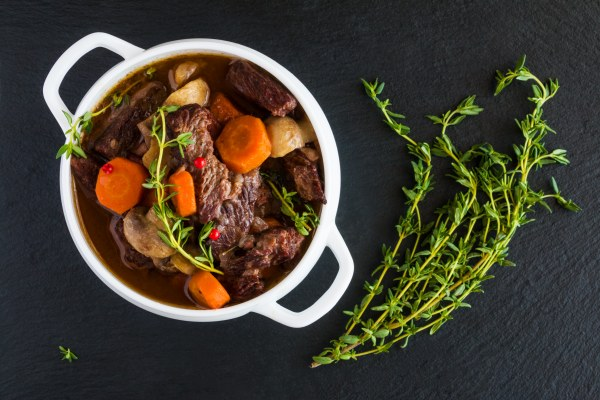

Les recettes de Mère-Grand
La recette du civet de Sanglier à la bourguignonne:

L'histoire
Le civet de sanglier à la bourguignonne est un plat traditionnel français, originaire de la région de Bourgogne, où le sanglier est mariné dans du vin rouge, puis mijoté avec des oignons, des carottes, des champignons et des herbes. Ce ragoût savoureux et parfumé reflète l'art de la cuisine bourguignonne, riche en vins et en gibier.
Ingrédients pour 4 personnes:
- Gros sel et poivre noir
- Farine
- 30 g de beurre
- 1 brin de romarin frais
- 2 oignons moyens
- 2 carottes
- 1.5 kg d' épaule de sanglier (découpée en petits morceaux)
- 1 bouteille de bourgogne puissant 12-13° (Givry)
- 1 petite boîte de champignon émincés
- 6 feuilles de sauge fraîche
- 1 bouquet garni (thym et laurier)
- 1 cuillère à soupe d' huile d'olive
- 1 cuillère à soupe de marc de Bourgogne
Préparation de la recette
- 1ère étape : la marinade.
- Dans un récipient fermant hermétiquement mettre la viande, les oignons coupés en quatre, les carottes coupées en rondelles, le romarin, la sauge, le bouquet garni, l'huile d'olive, le gros sel, le poivre, le marc puis le vin et mettre au frais pendant 5 heures.
- 2éme étape: la cuisson.
- Tout d'abord égoutter puis éponger la viande avec du papier absorbant.
- Faire fondre 30 g de beurre dans une cocotte (en fonte) puis faites revenir la viande 5 min à feu fort.
- Ajouter ensuite uniquement les autres ingrédients de la marinade plus les champignons faire cuire encore 5 min.
- Saupoudrer le tout de farine, tout doit être blanc. Mélanger bien le tout puis verser le jus de la marinade. Laisser cuire à feu doux pendant 2 heures en mélangeant de temps en temps.
- Juste avant de servir (hors du feu) ajouter 2 cuillères de vin que vous servirez à table.